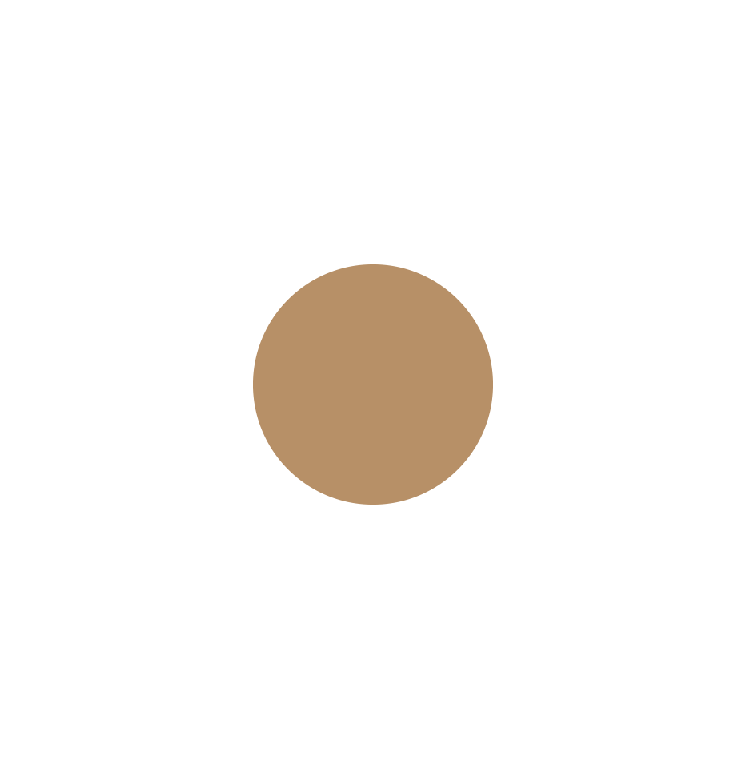
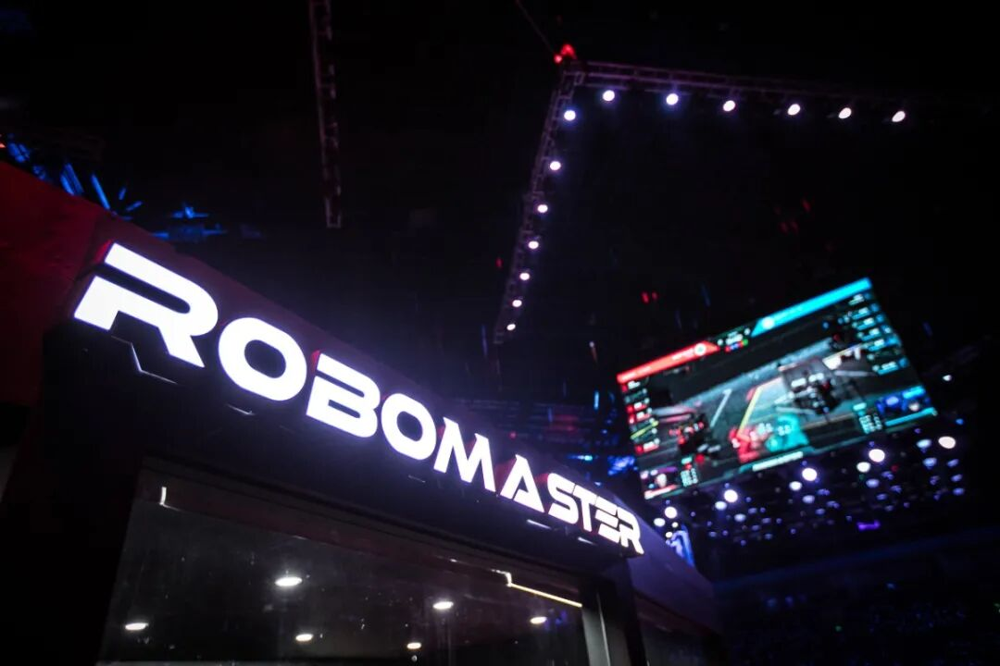
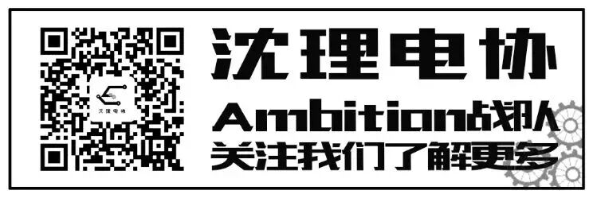

使用小程序

看过这个视频大家是不是很好奇这个比赛呢，下面让我来介绍一下这个比赛吧。

RoboMaster 机甲大师青少年系列赛是全国大学生机器人竞赛 RoboMaster 机甲大师赛办赛五年后拓展至青少年群体的全新探索。赛事由DJI大疆创新发起，要求青少年以团队形式参与。青少年系列赛包含：使用EP机器人参与的青少年对抗赛、使用TT编程无人机参与的青少年任务赛无人机迷宫赛、使用TT及EP参与的青少年任务赛AI核电救援赛、使用S1机器人参与的全民挑战赛。这个比赛促进了大学生提高自身科技创新能力，动手实践能力。
|机器人的科技竞技场|
－参赛选手独立研发实体机器人
－FPV第一人称视角（沉浸式射击体验）
－英雄/步兵/无人机/基地等多兵种协同作战
|工程人才的创新舞台|
－精密机械设计强化机器人稳定性
－机器视觉技术自动目标识别跟踪
－裁判系统实时通信人机智能交互
－软件系统控制算法顶级工程博弈
|席卷全球的科技盛会|
－北美/东亚/中欧顶尖高校强势踢馆
－海外先锋媒体争相报道掀起全球科技狂潮
|顶级享受的视听盛宴|
－专业导演舞美团队 －华丽现场激战画面
－电竞解说热血讲解 －千万粉丝在线观看
比赛在长28米、宽15米，规格与标准篮球场相同的战场中进行。双方战队的基地机器人分别位于战场两端，英雄机器人、步兵机器人则可四处游走，攻击对手。战场中设计了“河流”、“荒地”、“桥梁”等地形，机器人需灵活应对；功能不同的“神符”散落在战场各处，抢占神符可令机器人在短时间内获得生命值恢复、攻击力增加等优势。
2016年RoboMaster大赛引入了诸多新元素。英雄机器人、无人机首次亮相战场。相对于步兵机器人，英雄机器人的生命值更高、攻击力更强，还具备搭桥铺路等特殊能力；无人机则可用于侦察敌情，或抓取弹药轰炸敌方基地。每局比赛限时7分钟，率先攻破对方基地，或比赛结束时血量较多的一方将获得胜利。
本赛事着重培养青少年的工程理论知识与人工智能实践能力，帮助青少年完成从机器人基础、程序设计到人工智能、机器人控制原理的知识进阶，并通过竞赛的形式，考查学生的临场反应能力、发现问题和解决问题的能力。同时，赛事将充分考验学生的团队协作能力与责任感，让青少年在科技竞技中获得快乐和成就感，充满信心地面对未来，朝着改变世界的方向前进。
排版|苗力文
文字|百度
